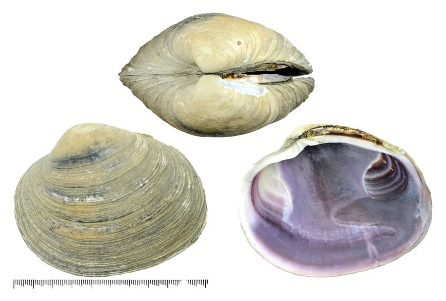

软体动物 · 动物界
紫石房蛤 Saxidomus purpurata

壳厚而重、壳内面泛紫的大型蛤蜊，生活在潮下带沙泥底，生长缓慢，是中国北方名贵的食用贝类，俗称紫蛤。
- 分类
- 门软体动物门纲双壳纲目帘蛤目科帘蛤科属石房蛤属
- 栖息环境
- 潮间带下区至水深数十米的沙泥和砾石底质
- 地理分布
- 西北太平洋，包括中国黄海、渤海和日本沿海
- 保护级别
- 尚无专门保护级别；生长慢、采捕强，局部资源下降
物种志
紫石房蛤的贝壳呈椭圆形，壳长约八至十二厘米，壳质坚厚，两壳膨凸，壳面呈灰白至黄褐色，有粗糙的同心生长纹和一层薄角质皮，壳内面呈紫色或淡紫色，壳缘光滑，铰合部有主齿。足部肥大，水管较短，末端有触手。它靠足部在沙泥中掘穴，栖息较深，滤食时把水管伸出沙面。壳内面的紫色是它最明显的特征。
它分布于西北太平洋，包括中国黄海、渤海和日本沿海，栖息在潮间带下区至水深数十米的沙泥和砾石底质，喜欢水温较低、水流畅通的海底。它以硅藻和有机碎屑为食，生长缓慢，寿命可达十余年。繁殖期在夏季，雌雄异体，幼虫经浮游阶段后附着到沙底。紫石房蛤肉味鲜美、个体大，是中国北方名贵的食用贝类，多用于宴席。由于生长慢、采捕强度大，局部资源已明显下降，目前尚无专门的保护级别。
形态与习性
- 食性滤食硅藻和有机碎屑
- 壳长约八至十二厘米，壳质坚厚
- 壳内面呈紫色或淡紫色，为最显著特征
- 栖息深度潮间带下区至水深数十米
- 生长生长缓慢，寿命可达十余年
- 经济价值北方名贵食用贝类，多用于宴席
趣味知识
- 紫石房蛤最特别的地方是壳内面那层紫色，越老的个体颜色越深。
- 它生长很慢，一只巴掌大的个体可能已经在海底生活了十几年。
- 北方渔民把它看作上等海味，个体大、肉质厚，价格远高于普通蛤蜊。